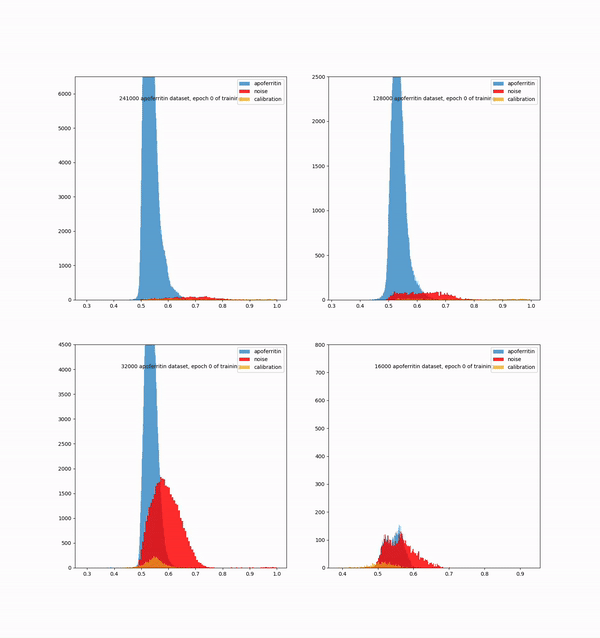

Armin Foroughi
Assimilating various analytical methods to optimize machine learning models
Howdie!
I am an enthusiastic data scientist with background in biochemistry
Currently I'm working on a machine learning algorthm to enhance protein structure resolution in CryoEM by picking better protein particle data
Projects
- Developing a machine learning model to quantify heterogeneity in CryoEM (Cryogenic Electron Microscopy) particles
- generating and analyzing new data
- building a pipeline for the metadata to construct new features by exploring different behaviors of each particle across different iterations of CryoEm protein reconstruction
- leveraging analytical tools and techniques to identify and resolve problems
- building a complex grid search algorithm that builds thousands of models different by their model structure, input data and learning mechanism, which then puts these models through a pipeline of tests to discover the most optimized parameters for the overall data
- optimizing the use of linux Slurm job scheduler, by means of employing each GPU node of the server to train or test multiple models in parallel 
- Left Figure: The heterogeneity between the protein particles and other contaminants grows during earch epoch of training display
- Right Figure: 20s Proteasom 3D structure

- To research unknown adverse of effects of drugs using the FAERS (FDA Adverse Event Reporting System) data base
- fining any new and crucial side effects of drugs by writing filter functions on Linux to search for a unique scenario of drug usage
- Creating an Atlas of PSMA uptake for post-Proctectomy Patients
- contouring lesions or lymphadenitis in PET, MRI or CT scans by using MIM platform, to analyze the most common places lesions can develop after a post -Proctectomy surgery
- Coding School Instructor
- developing face recignition model on dojo drone to recognise people around the house
Education
-
University of Virginia
- Master of Science in Data Science
-
University of California, San Diego
- Bachelors of Science in Biochemistry with specialization in Data Science